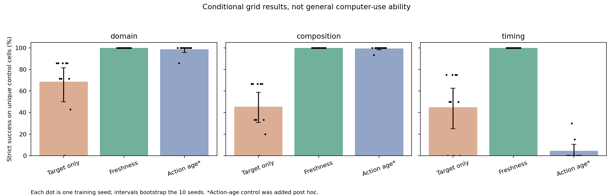

200 nominal cases hid only 56 control configurations, 51 already represented in training. The repeated scores were real but did not establish generalization.
10 training seeds per arm; 100000 transitions each. 35 domain cells, 45 unseen compositions, 80 unfamiliar-delay cells. The post-hoc action-age control tests the memory-capacity confound.
| Partition | Policy | Mean | Seed-bootstrap interval | Seed range |
|---|---|---|---|---|
| domain | Target-only, one-step memory | 68.6% | 50.0%–81.4% | 0.0%–85.7% |
| domain | Visible freshness, one-step memory | 100.0% | 100.0%–100.0% | 100.0%–100.0% |
| domain | Own action-age memory, no freshness (post hoc) | 98.6% | 95.7%–100.0% | 85.7%–100.0% |
| composition | Target-only, one-step memory | 45.3% | 30.7%–58.7% | 0.0%–66.7% |
| composition | Visible freshness, one-step memory | 100.0% | 100.0%–100.0% | 100.0%–100.0% |
| composition | Own action-age memory, no freshness (post hoc) | 99.3% | 98.0%–100.0% | 93.3%–100.0% |
| timing | Target-only, one-step memory | 45.0% | 25.0%–62.5% | 0.0%–75.0% |
| timing | Visible freshness, one-step memory | 100.0% | 100.0%–100.0% | 100.0%–100.0% |
| timing | Own action-age memory, no freshness (post hoc) | 4.5% | 0.0%–10.5% | 0.0%–30.0% |
The conservative timestamp-free rule also solves every cell. Freshness is not necessary here. The still-perfect freshness scores expose a ceiling of the engineered representation; they are not Qwen web-task results.
Full audit, every seed and limitations · Machine-readable analysis